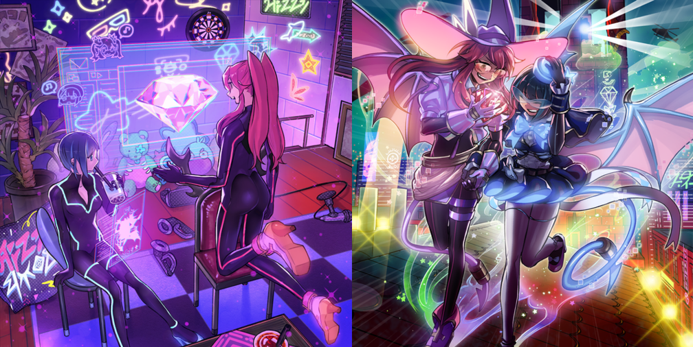
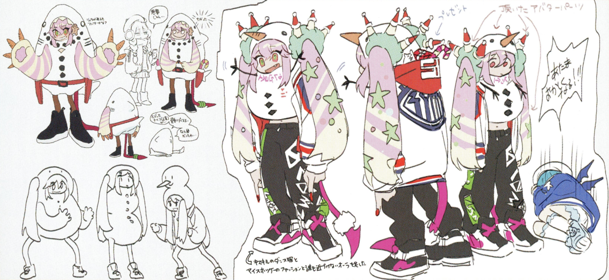
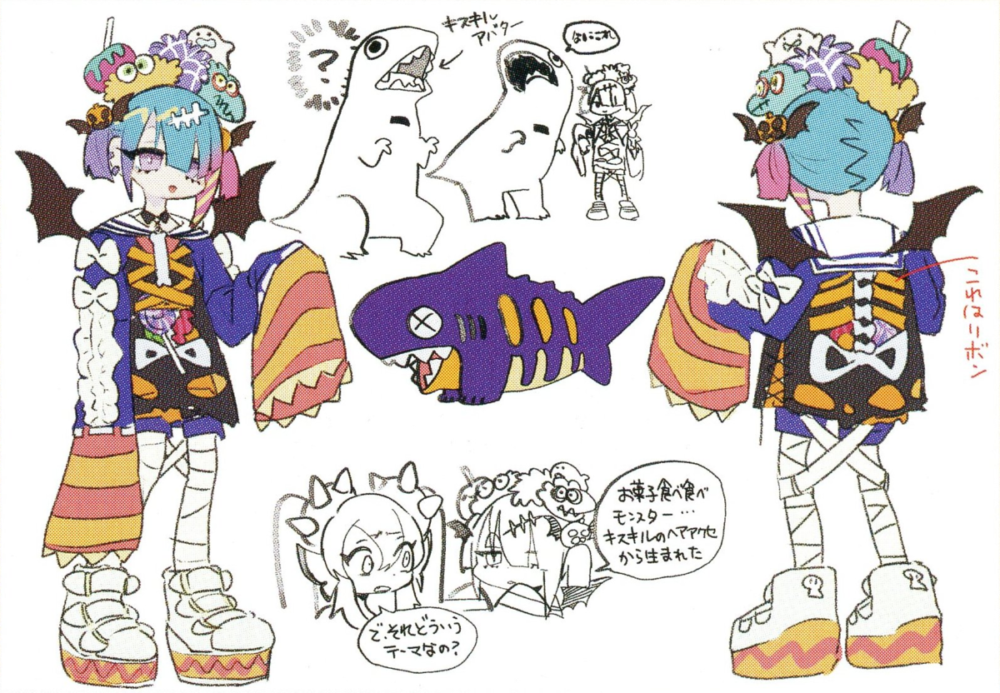

The super popular streamers whose premise is 'The angelic yet impish streamers who've ascended from the underworld to become the Cutest!'. They've become super popular since they never half-ass their projects, and because their appearances are at extreme odds with how they talk.
"Live☆Twin Ki-sikil" She likes shoes, dancing, and animals. Because she tends to wear wacky costumes, she's considered something of a major weirdo among the rest of the demon world.
"Live☆Twin Lil-la" She likes sharks, money, and getting a ton of views and clicks. She does costumes that are gross, ugly, and cute all at once; while she hands the more subtle or tricky outfits over to "Ki-sikil".
The "Live☆Twin" channel's log-in page. There's an animation featuring the two, but it tends to get a lot of complaints for getting in the way.
The "Live☆Twin" homepage. Since they tend to force their charm and appeal, they have a bad rep for being 'tryhards'.
"Ki-sikil" actually prefers to wear cute outfits, but she tends to get suckered in by the schemes of "Lil-la" to raise their profiles as content creators, namely by making her wear clownish costumes that only an D-List celebrity would wear... on the other end, "Lil-la" has a hardcore hobby of making 'her own custom costumes', that she makes for herself first and foremost. The pro skills of "Ki-sikil" at modeling costumes have led them to going viral, pushing them closer to being #1 in the World Streamer Rankings!
In the world's dark underbelly, there are some things that must be done even if they break the law. That's when you hire Free Agents. This serves as the 'plan B' for intelligence agencies around the world, who need to get their objectives completed, but don't want any traces of their involvement to lead back to them. Among these agents, there's a talented team of phantom thieves codenamed "Evil★Twin" who have shot up the World Agent Rankings like a comet. The targets of their jobs differ depending on the request, but if their target is something 'cute' like jewelry, they get a lot more motivated... maybe?
Requests to them can only be made via their streamer channel, which was designed as camouflage. Recently, there's a feeling that the site management has gotten more aggressive...
This time, their job was to steal the "Big Jewel", bought and sold by less-than-legal methods. Their target was guarded by extremely strict security, but it was a super easy mission for them, easier than deciding what to use as the thumbnails for the videos.


